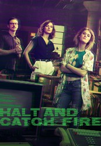

")
 
 IMDB-Wertung: 8.3 / 10
IMDB-Wertung: 8.3 / 10  Metascore:
Metascore: 
Ein Visionär, ein Ingenieur und ein Wunderkind werden im Verlauf des Computer-Booms der frühen 1980er Jahre mit Computerriesen konfrontiert. Später wird ihre berufliche und private Verbindung durch Habgier und Stolz auf die Probe gestellt.
Jahr: 2014
Dauer: 47 Minuten
FSK:
Land: USA Studio: AMCTonspuren: DTS - ,
Untertitel: Deutsch,
Auflösung: 720p (1280x720) Größe: 128000 MB
Regisseur:
Drehbuch: American Cinema International
Soundtrack:
Darsteller:
 Lee Pace als Joe MacMillan
Lee Pace als Joe MacMillan Scoot McNairy als Gordon Clark
Scoot McNairy als Gordon Clark Kerry Bishé als Donna Clark
Kerry Bishé als Donna Clark Toby Huss als John Bosworth
Toby Huss als John Bosworth Cooper Andrews als Yo-Yo Engberk
Cooper Andrews als Yo-Yo Engberk Joshua Hoover als Bodie
Joshua Hoover als Bodie Mark O'Brien als Tom Rendon
Mark O'Brien als Tom Rendon Aleksa Palladino als Sara Wheeler
Aleksa Palladino als Sara Wheeler Eric Goins als Larry
Eric Goins als Larry Pete Burris als Ed
Pete Burris als Ed Annabeth Gish als Diane Gould
Annabeth Gish als Diane Gould James Cromwell als Jacob Wheeler
James Cromwell als Jacob Wheeler Graham Beckel als Nathan Cardiff
Graham Beckel als Nathan Cardiff Annette O'Toole als Susan Emerson
Annette O'Toole als Susan Emerson Mike Pniewski als Barry Shields
Mike Pniewski als Barry Shields Matthew Lillard als Ken Diebold
Matthew Lillard als Ken Diebold Joshua Brady als Robot
Joshua Brady als Robot Skylar Astin als Jessie Evans
Skylar Astin als Jessie Evans Joe Dinicol als Craig Bosch
Joe Dinicol als Craig Bosch Joe Massingill als Doug Sheridan
Joe Massingill als Doug Sheridan Wayne Pére als Aaron
Wayne Pére als Aaron R. Keith Harris als Dr. Semel
R. Keith Harris als Dr. Semel John Getz als Joe MacMillan, Sr.
John Getz als Joe MacMillan, Sr. Kevin Rankin als Henry Clark
Kevin Rankin als Henry Clark James DuMont als Eugene Bowdich
James DuMont als Eugene Bowdich Robert C. Treveiler als Timothy Bondham
Robert C. Treveiler als Timothy Bondham David de Vries als Dennis Cummings
David de Vries als Dennis CummingsDatei: X:\HD-Serien\Halt and Catch Fire\S01\Halt and Catch Fire S01E01 Neustart.mkv seit 07.03.2017
Festplatte: HD Serien(A-H)
 Es gibt insgesamt 182 Filme in der Gruppe 'HD-Serien'
Es gibt insgesamt 182 Filme in der Gruppe 'HD-Serien'